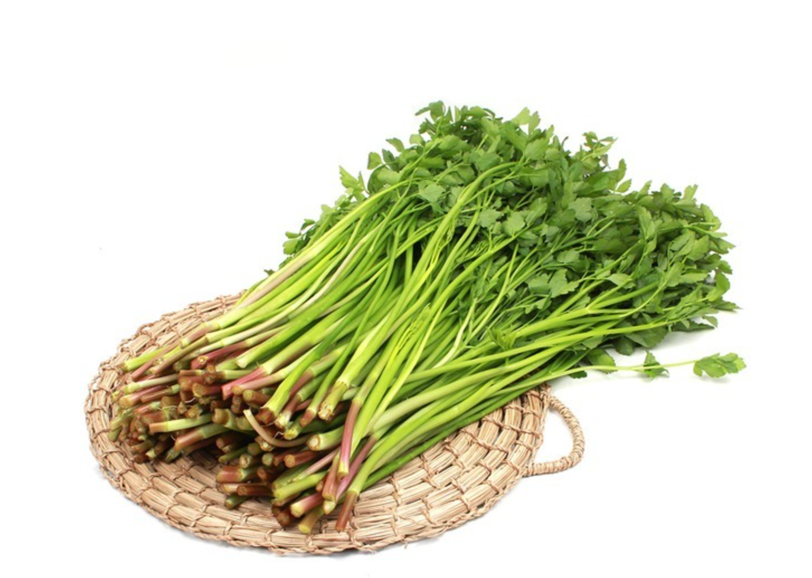
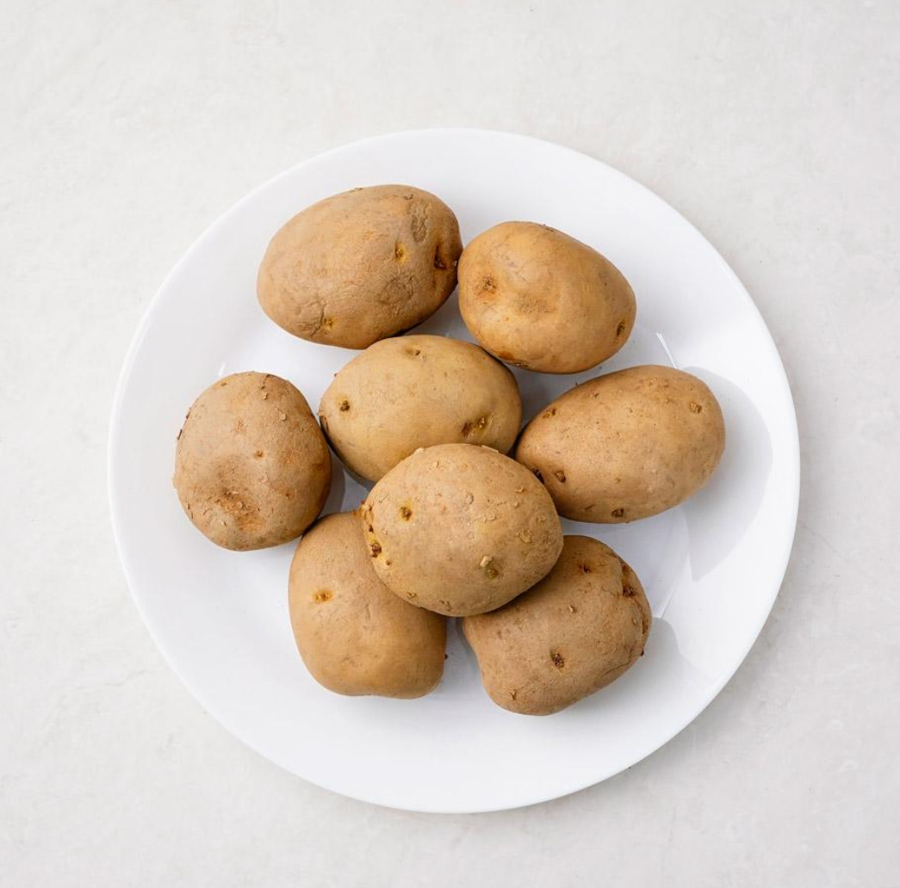
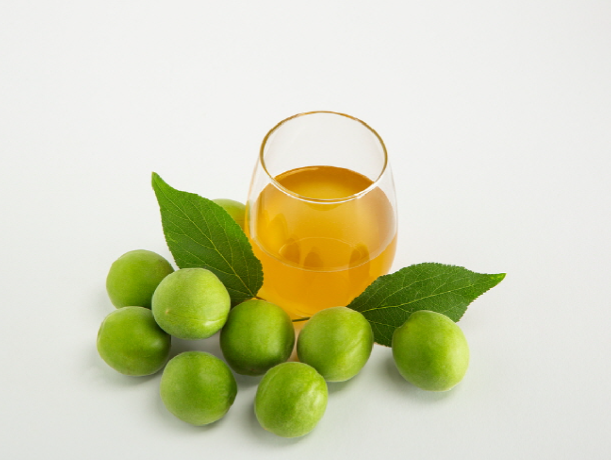
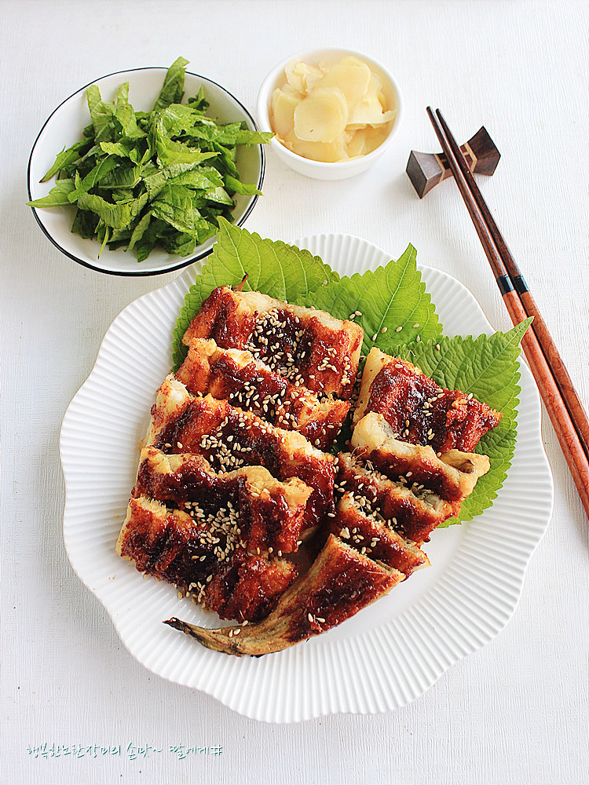
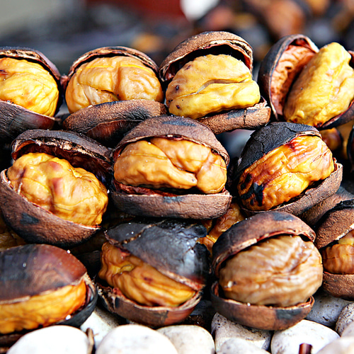
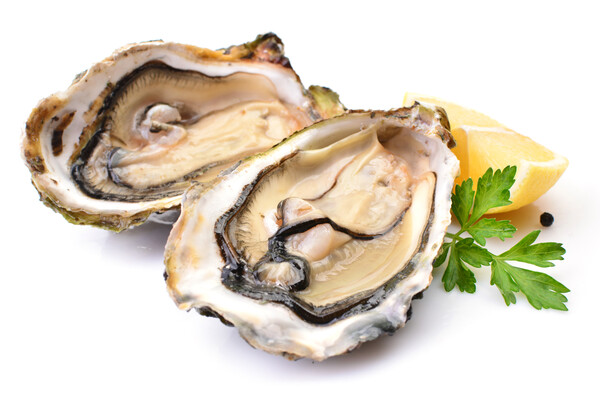
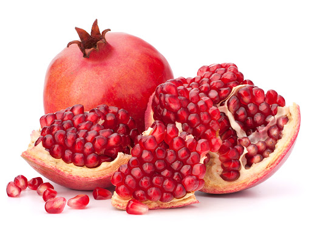
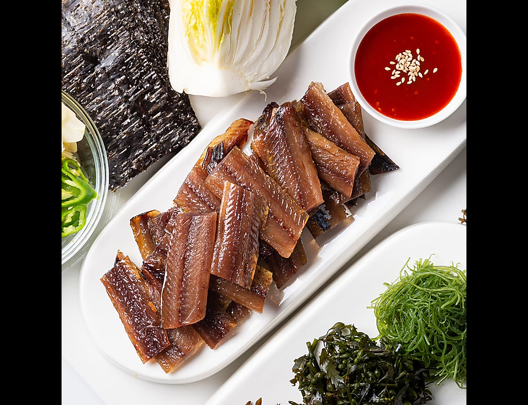
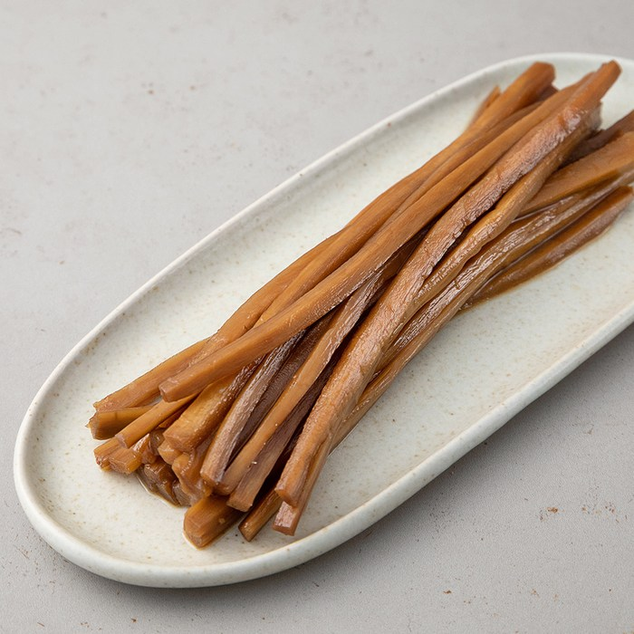
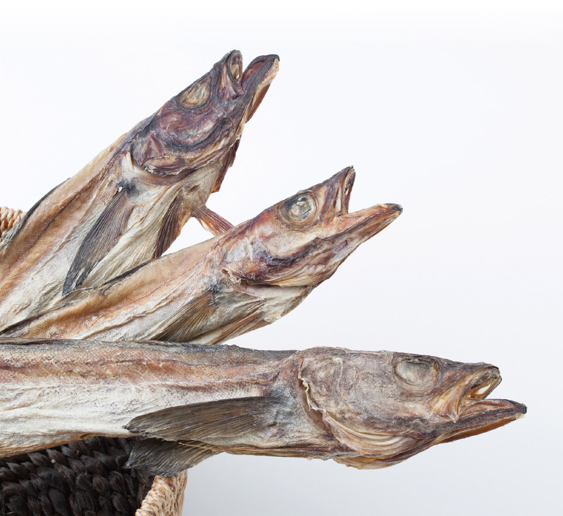

철분, 무기질 함량이 풍부하고, 비타민 B1, C가 다량 함유된 봄철의 냉이는 된장과 어울려 국으로 끓이거나 나물로 무쳐서, 또는 반죽을 입혀 튀김으로 맛있게 드실 수 있습니다.
미나리

미나리는 특유의 향긋함과 부드러운 식감이 특징인 봄철 채소입니다. 다양한 영양소가 풍부한 미나리는 특히 해독작용이 뛰어나 체내 중금속이나 각종 독소를 배출하는 데 탁월한 효과가 있습니다.
여름
감자

6~10월이 제철인 감자는 비타민 C, 칼륨, 인, 철분, 섬유질 등 몸에 좋은 영양소들이 가득합니다.
특히 감자에는 칼륨이 100g당 396mg으로 풍부한데, 칼륨은 나트륨 배출을 도와 고혈압 환자의 혈압 조절에 도움이 됩니다.
비타민 C는 노화 방지, 면역력 향상, 피로 해소 등의 효과가 있습니다.
또한 감자의 녹말은 위를 보호하는 데 좋고, 비타민 B와 비타민 C는 몸속 점막을 튼튼하게 해줍니다.
따라서 위산이 적은 아침 공복에 드시면 효능이 오래 지속됩니다.
매실

새콤달콤한 맛의 매실은 피로 회복과 소화 기능 회복에 도움을 줍니다.
특히 매실의 피크르산 성분은 위장 유해균을 없애 배탈과 식중독 예방에 좋습니다.
매실에 풍부한 구연산도 소화기 해독 작용과 함께 장 연동운동 조절을 돕습니다.
따라서 식후에 소화가 안 된다면 탄산음료 대신 매실차를 드시면 좋습니다.
다만, 매실은 반드시 씨를 제거하고 드셔야 합니다. 매실 씨앗에는 자연 독소 종류 중 하나인 아미그달린이 들어 있기 때문입니다.
장어

기력 보충에 특히 좋은 장어는 여름이 제철입니다. 장어는 비타민과 칼슘, 철분 등이 풍부해 피로 해소, 골다공증, 빈혈에 좋습니다. 장어는 정력에 좋은 뮤신과 코드로이친 성분이 풍부해 대표적인 스태미나 식품으로도 알려졌습니다. 신선한 장어는 살이 미끈하고 눈이 투명합니다. 또 등 빛깔이 회흑색, 다갈색, 진한 녹색인 장어가 맛이 좋습니다. 장어는 생강, 부추와 함께 드시면 더 좋습니다. 비린 맛을 없애줄 뿐만 아니라, 소화 작용을 돕고, 면역력을 높입니다. 다만, 장어를 드신 후에 후식으로 복숭아, 사과, 포도를 드시는 것은 자제해야 합니다. 이 과일들의 유기산이 장에 자극을 줘 장어의 지방이 소화되는 것을 방해해 설사를 유발할 수 있습니다.
가을
밤

가을철 대표 제철 음식인 밤은 식이섬유와 미네랄, 비타민, 항산화 물질을 포함한 여러 영양소 등을 포함하고 있습니다. 밤은 소화기 건강을 향상시키며, 뼈를 강화하고, 심장 건강을 증진시킵니다.
굴

바다에서 나는 우유라고 불리는 굴은 건강에 큰 도움을 주는 가을철 제철 음식입니다. 굴에 함유된 철분, 엽산은 헤모글로빈과 적혈구의 생성을 촉진하고, 체내에 산소 공급을 도와 혈액순환을 원활하게 하여 빈혈을 개선하는 데 도움됩니다. 철분 흡수를 돕는 구리 성분도 함유하고 있어 빈혈 예방에 탁월합니다.
석류

가을철 제철 음식인 석류의 과육과 과일 껍질은 강한 항산화적 활성을 나타내며 종자유는 약한 항에스트로겐 활성을 나타내어 여성의 월경 증세 완화 및 폐경기 장애 해소에 도움을 줍니다. 또한 유방암 예방 및 전립선암 예방, 암세포의 증식 억제 등의 간섭인자로써 항암 활성을 나타내기도 합니다.
겨울
과메기

과메기도 겨울철 별미입니다. 과메기는 DHA‧EPA 등 오메가3 지방산, 비타민 등 다양한 영양소가 함유돼 있습니다. 오메가3 지방산은 중성지방을 낮추고 HDL 콜레스테롤은 높여 혈압, 심근경색, 동맥경화 등 심혈관계 질환 예방에 도움이 됩니다. 과메기에는 비타민 A, 비타민 B12, 비타민 E 등도 풍부해 노화와 빈혈을 방지하는 데 좋습니다. 과메기는 미역, 마늘과 함께 드시면 더 맛있습니다. 생미역은 수용성 식이섬유소인 알긴산이 풍부해 콜레스테롤과 중성지방의 배출을 돕습니다.
우엉

아삭아삭 씹는 맛이 좋은 우엉도 1~3월이 제철입니다. 우엉은 당질의 일종인 이눌린이 풍부해 신장 기능을 높여주고, 이뇨 작용에 효과가 있습니다. 또 풍부한 섬유소질이 배변을 촉진하며 다이어트에도 도움을 줍니다. 우엉 역시 돼지고기와 궁합이 좋습니다. 우엉이 산성 식품인 돼지고기를 중화시키며 누린내도 우엉 특유의 향으로 제거할 수 있습니다. 우엉을 고를 때는 너무 건조하지 않으며 껍질에 흠이 없고 매끈한 것, 수염뿌리나 혹이 없는 것이 좋습니다.
명태

1월의 명태는 산란기를 맞아 알이 꽉 차고 살이 통통하게 올라 맛이 좋다고 알려졌습니다. 명태는 지방 함량이 낮고 맛이 담백한 것이 특징입니다. 명태는 필수 아미노산을 포함한 단백질이 풍부하고 칼슘과 비타민 A 함량이 높습니다. 칼로리가 낮아 다이어트에도 효과적입니다. 명태를 고를 때는 눈이 맑고 아가미가 선홍색인 것, 내장이 빠져나오지 않은 것을 선택하는 것이 좋습니다. 무와 같이 매운탕으로 조리해 드시는 것을 추천합니다.